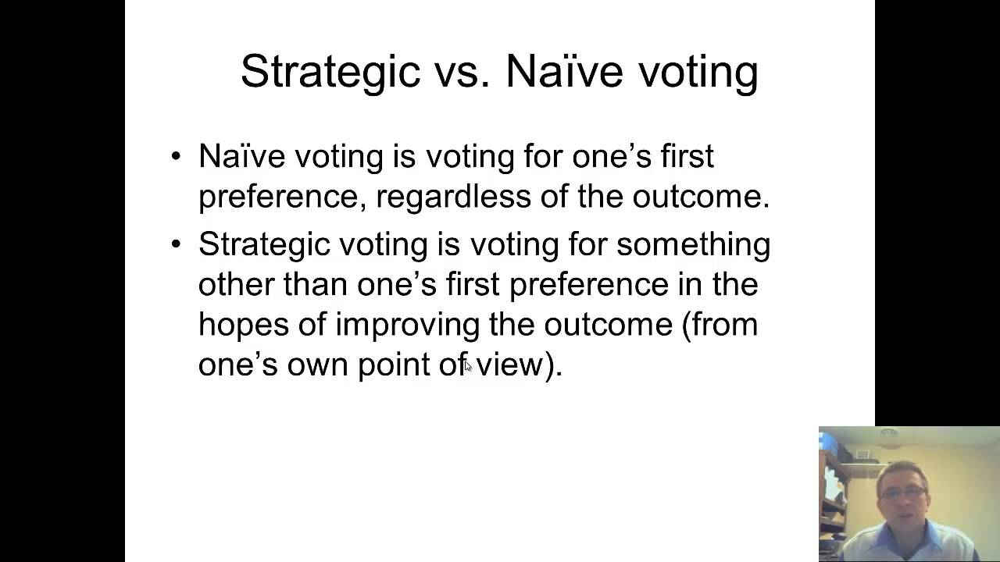

Who is that man in the corner, and why is he watching you?Well folks, as you know, Club Troppo is the only website east of the whole damn Murray Darling system that has the reputation to attract the kind of high quality debate we're in for tonight. So everyone, in your best ClupPony clobber, cop this debate. A nice fellow going by the name of Peter Dempster approached me and asked what I thought of his idea. I sent him a few dot points, but then thought that rather than expand, I'd set up a debate or discussion here. So I'm publishing this piece now and after you've had your fill of civility, we'll launch another round when I work up my reaction.
You'll laugh, you'll cry, you'll fill in all the surveys that tell you (quite routinely and wrongly as it turns out) that, here at ClubPony we value your opinion. And then you'll do it all over again. Anyway, here's Peter's post.
Most voters occupy the middle ground of politics; they are centrists.
| Statements about politics: Essential Poll, 18 July 2017 | Agree | Disagree |
| I wish both sides of politics would try to ‘meet each other in the middle’ more often | 71% | 6% |
| I don’t personally identify with either “left wing” or “right wing” politics | 50% | 18% |
| I would consider voting for a new “centrist” political party which takes ideas from both sides of politics | 45% | 14% |
We don’t need a new centrist party. Working with what we have, but voting smarter, centrist voters can force politicians to meet in the middle. To make it happen, however, they need expert advice from political journalists. Sports journalists provide a rough model for what political journalists need to do.
Consider that sports journalists watch a lot of sport, talk to lots of fans, players and coaches, read and write about sport, argue about sport, may have played and coached. Journalists routinely distil that information, for the fans, by nominating a national team and arguing the case for who makes the final cut, who doesn’t. The process is part of the routine elevation – from club teams to national team – of the loyalties and hopes of sports fans.
Political journalists watch a lot of politicking, see how issues play out, talk daily to politicians and their advisors, immerse themselves in polls, read and write about politics, argue about politics, have participated in politics or plan to. They could distil their knowledge by nominating a national political team, but don’t. They should, since it provides voters with critical information that is otherwise impossible to obtain. The sports model can be modified to preserve journalistic independence.
Thus, at election time, the centrist voter may appeal to the journalist …
Of the candidates nominated by the major political parties, nominate the slate of candidates, from both sides, that offers the best prospect of meeting in the middle, of cutting a deal that most voters can live with. We accept the uncertainties; your informed and considered opinion is all we ask.
… responding constructively, the journalist ranks candidates for their ability meet in the middle. Let’s just say that candidates are ranked according to their ‘moderateness’ as revealed by their history of political words and actions, providing the basis for the elevation of voter loyalties and hopes – from parties to nation. To illustrate …
Suppose there are 100 seats and 200 candidates, 100 from each side of politics. The journalist separately ranks each of the two slates, one to 100, according to moderateness. The centrist slate then selects itself; it’s a hybrid slate that takes the top 50 candidates from both sides. A sports journalist has the corresponding task, to rank the players. The sports team then selects itself – the top 11, 13 or 15, however many are required. The difference is that a political journalist provides two lists, separately ranking the candidates from each party. The centrist voter imposes the 50:50 split, taking the top 50 from both sides, and journalistic independence is preserved.
Rankings will vary between journalists; that’s good. Let’s shine a light on moderation; debate how to assess the moderateness of politicians; look closely at the relative merits of candidates at the margin of the cut, either just in or just out. Expect a consensus ranking to emerge, such there is broad agreement about the relative moderateness of candidates.
Journalists may apply complementary filters when ranking candidates – ability, experience, integrity, consistency and transparency. They may give weight to considerations of balance – more women, fewer lawyers, fewer from the finance and property sectors, more new blood and fewer old hands. Such variations are welcome, requiring only that journalists explain their approach.
The centrist agenda can be variously interpreted. It enlists political journalists in a public examination of the work of preselection committees, marking both parties down for candidates who cannot get beyond their factional and party rivalries. It provides centrist voters with the information they need to informally swap votes across party lines, abandoning non-centrist candidates from their party and switching votes to centrist candidates from the opposing party. It upholds democratic principles: accepting ‘the will of the people’ regardless of one’s own views; electing representatives for their ability to investigate, discern and accomplish the will of the people. It applies selective pressure to processes of political recruitment, such that, longer term, qualities of ruthlessness, manipulation and aggression become less important to political success; more agreeable natures aspire to political careers.
Democracy comes more easily to centrists; it’s their will that should prevail. Intentionally or not, however, the centrist gift to the non-centrist is precisely that democracy prevails – including of course, that opposing non-centrists will not prevail. Non-centrists, if also democrats, can cease representative hostilities with opposing non-centrists. Centrism is thus a political device that elevates all democrats, centrist and non-centrist alike, from party to nation.
Plausibly, political behaviour will improve immediately that rankings and centrist slates begin to take shape, since many seats are threatened if five or ten percent of voters apply pressure where it matters. Many more would welcome the result. Many of us try to send a message via the minor parties but it’s a desperate and unconvincing tactic. Angry threats to ‘wreck the joint’ are also risky; the joint might get wrecked.
The organisational requirements need thought; the centrist cause would need a media strategy and commensurate resources. The objective is clear, however, that voters understand the centrist option and are somehow handed a centrist how-to-vote card on election day.
But first things first; will political journalists respond to the call, enabling centrists to distil their knowledge into how-to-vote cards? Somebody needs to ask.
A more detailed version of this proposition is here (pdf).
our political parties are already centrist by the definition above ('close in policy' to the existing duopoly). There is not much separating them. They put different weight on different parts of the elite (labour pro-union and Super, Lib pro-bank and pro-tax evasion).
I would think of a centrist party as occupying the middle of the political ground that Australia could have. A somewhat technocratic party that knows how to govern in the interest of the people. Such a party would be centrist in many other countries, and you see many such parties. Here in Australia it would be a radically different party from the two main ones, not anywhere close to the middle ground between those two.
The suggestion to go even more into a sporting match philosophy of politics is funny. "Let's start taking politics more seriously, like sports!"
It's not clear to me how much difference more information would make -- the survey shows many people already know the problem, and that either party could probably win quite easily if they got rid of various elements of their party. For example, the Liberal might become liberal and get rid of the loony conservatives as I think many people thought would happen once Turnbull got in (and hence why he started off so popular). Of course, with tiny numbers of members now in these parties and the possibility of winning by simply having a negative/attack style agenda, it is perhaps unsurprising this doesn't happen.
So the alternative of trying to force the current parties to become more centrist, which I think is almost impossible given they have been becoming either more extreme (Libs) or standing for almost nothing (Labor), is to have a new party Like En Marche! in France which takes moderate members from both parties.
Contests are not, and really should not be, between individual candidates. A crossbench government, made up theoretically of the best people from both sides, would be a disaster. Electing a crossbench government without a program is not going to solve anything. What might is action to force the parties to adopt more democratic and transparent policy. candidate and leaderships election processes and to a count to the public for all their funds in real time and without exceptions of any kind. And proportional representation in both houses would cure many of the problems identified in this post.
I believe that having a compulsory voting system has lead Australia to a naturally stable and middle ground polity. Yes we have some extremists emerge but they are a minority and will never wield power. Abbott proves it. He gained power for a range of reasons. But he pretended to be a centrist and lied about his intentions. He was rolled when he revealed his true hand. If we did not have compulsory voting we would not have the stability and middle ground prevalence of the last 10 decades. That is why extreme conservatives advocate abolishing compulsory voting. Not for any pure democracratic philosophy. But politicians know to win they have to court the swing voter who occupies the middle ground. Without compulsion that swing voter might not bother at all so we would elect an extremist group. For example in America the President is often elected by less than 25% of the potential electorate.
The most obvious problem with that is that not all issues have "meet in the middle" as a desirable outcome. From "Peace for our time" to "climate policy but no action"*, there's a whole lot of cases where there's only one good answer.
The US Republicans have demonstrated that an always-defect strategy works against centrists. Compromise, defect, compromise again, after a few iterations the Overton Window is discussions of how much gerrymandering is allowed and which atrocities should be supported.
Crooked Timber recently had a discussion on a related issue:
Obviously that's not true in Australia and hasn't been for a very long time (if ever). But torturing babies is equally obviously an example of a centrist position that has enduring bipartisan support. Should we therefore conclude that torturing babies is a good thing and that we as voters should support it? Sadly most Australians already do,but is that a value we want the rest of the world to take up?
* Point 4 in this list is the most recent bipartisan position that I can see, but I was thinking of the famous Rudd-Turnbull deal before I started searching. 5% reduction by 2020 is a commitment to at least 2 degrees of warming and a metre of sea level rise, both by 2100.
Purely from a mechanical perspective, can you explain how this works? Imagine you're looking at a slate that ends up with one party's candidates all at the top and the others all at the bottom. With that slate, why would the centrist list not include only the 100 highest-scoring candidates?
Also, you seem to imagine for the sake of this discussion that supporters of other parties can't vote. But there will inevitably be an issue (like summary execution, say) where both parties take one position but there's a plausible argument made that that position is wrong. Does your "centrist list" account for the new argument and put both parties on one side of it, with an imaginary other-position-party on the other? Or just say that anything not covered by the current parties is by that fact alone irrelevant?
"Suppose there are 100 seats and 200 candidates, 100 from each side of politics. The journalist separately ranks each of the two slates, one to 100, according to moderateness. The centrist slate then selects itself; it’s a hybrid slate that takes the top 50 candidates from both sides."
Nonsense. Surely a sports journalist would not construct their world cricket team on the basis that (2 counties for simplicity, all countries random) "Bangladesh has 10 of the best 11 players in the world; Ireland has one of the best 11 players in the world; therefore the world team will consist of about half from each - P1, P2, P3, P4, P5, P6, I7, I8, I9, I10, I11." If one party is less centrist than the other(s), it is surely the journalist's duty to say so.
Furthermore, Australians use the term 'centrist' to mean 'agreeing with me'.
How does 'moderateness' differ from 'moderation'?
It seems a bit of an assumption to believe that because a candidate has some moderate positions on some issues that they won’t also have some visceral ,strongly held positions on other issues ( positions that also could be internally quite contradictory)
The executive in Switzerland exactly meets the theory proposed here. The federal council has 7 members who, by convention reflect the composition of the parliament, which itself is elected by proportional representation. There is simply no evidence that permanent crossbench governance in Switzerland has achieved any of the things claimed in this proposal.
Sadly this seems to be a "discussion" not featuring its instigator.
This article struck me as a quiet wish that a centrist solution could be arranged between the majorities in all four involved parties that the NEG be passed. It's even vaguely possible that The Greens could also be brought on board using the "at least this isn't a capped commitment to to do no more than specified" argument. Sadly the Liberals appear to prefer negotiating with their angry minority, and their coalition parties are following suit (or perhaps there's enough dark-brown National and LNP sentiment to have the same effect).
I'd obviously prefer less climate change rather than more, but this is the least-more option that we have...
I agree that compulsory voting is a blessing. I also don't know how much difference more information would make, but think it's worth a try. Not sure how to progress that but working on it.
My hope is that the proposed mechanism, involving political journalists and a debate around moderation, will give raise its profile. That the prospect of cross-voting reduces impediments to voting for moderate candidates in the 'other' major party. That the various protest voters give the two-party system another chance.
I’m not promoting any form of national unity government, if that is what you mean by crossbench government; I could have been clearer about that. There would still be a government and an opposition as usually understood, but with stronger incentives to meet in the middle. There may be many ways to do that, including closer supervision of political parties. My proposal is that political journalists tell us what they know in a form that centrists can readily understand. There is a separate argument about proportional representation and multi-member electorates. I’m concerned only with how to use existing resources and capabilities to get better results from the existing two-party system.
I agree compulsory voting is a blessing and there is much for which we should be thankful. My thought is that, with relatively little effort, a lot more can be achieved. And, if we can make it work, it may help to address the polarisation that plagues democracies generally.
I’m sure that the ‘will of the people’ cannot not always be for the ‘good’ and will often disgust many. With 16 million voters it’s unavoidable. A disgusted individual may still accept and defend legitimate expressions of the ‘will of the people’, not only as a matter of principle but also because it offers better prospects for a respectful hearing if one aims to alter the will of the people.
I suggest that, just as individuals do violent and other bad things when mentally stressed or mentally ill, so are communities more likely to do bad things when their collective mental faculties have been reduced to a shouting match. We cannot get better outcomes without better processes, thus need to work on both.
The rankings are within parties not between parties, such that centrists can safely cross-vote for moderates in parties that they would not otherwise vote for. There is no sense in which one party is ranked above or below another. A centrist is less interested in which party ‘wins’, more that the parties meet in the middle. A more detailed explanation is here (pdf).
The proposal does restrict the right to form parties or to vote in any way. It simply provides centrist voters with information that they can use to vote for moderation on polling day.
I disagree that centrists necessarily expect to be agreed with. My guess is that many are simply realists. They recognise that many issues are complex and difficult, that they are often not willing or not able to engage effectively with the issues, that their best option is to delegate the decisions to people would will work through the issues with respect and open-mindedness.
My unstated assumption is that the major parties organise themselves around the centre, although not necessarily close to the centre. Pulling too far one way or the other is dangerous, since centrist voters may be lost to the other side. Given that dynamic in the background, the 50:50 slate provides useful information to the centrist voter who wants to send a strong signal to both sides … meet in the middle. Thus, the journalist does not need to assess the ‘centrism’ of parties or candidates.
I disagree that centrists necessarily expect to be agreed with. My guess is that many are simply realists. They recognise that many issues are complex and difficult, that they are often not willing or not able to engage effectively with the issues, that their best option is to delegate the decisions to people would will work through the issues with respect and open-mindedness.
Candidates for political office are like the rest of us, not perfect. But all of us are endlessly ranked and graded from one perspective or another, as job applicants, partners, parents, children, trustworthiness, creditworthiness, threat, guilt, niceness, approachability ...
The idea is that centrist voters want candidates graded for their ability to investigate, discern and achieve the will of the people. Political journalists seem best placed to do that.
I’m not promoting any form of national unity government, if that is what you mean by crossbench government; I could have been clearer about that. There would still be a government and an opposition as usually understood, but with stronger incentives to meet in the middle. There may be many ways to do that; my proposal is that political journalists tell us what they know in a form that centrists can readily understand.
There is a separate argument about proportional representation and multi-member electorates. I’m concerned only with how to use existing resources and capabilities to get better results from the existing two-party system.